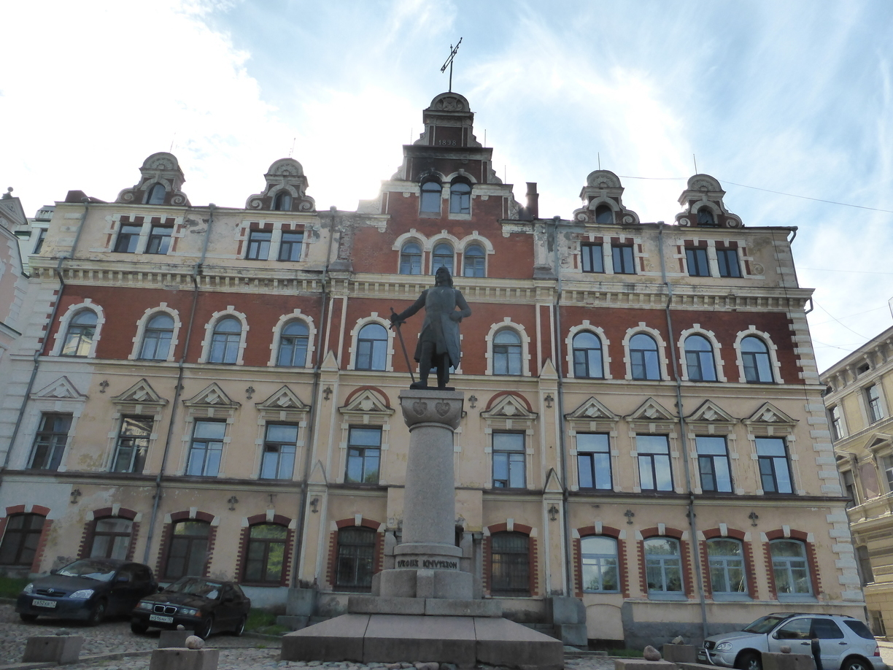
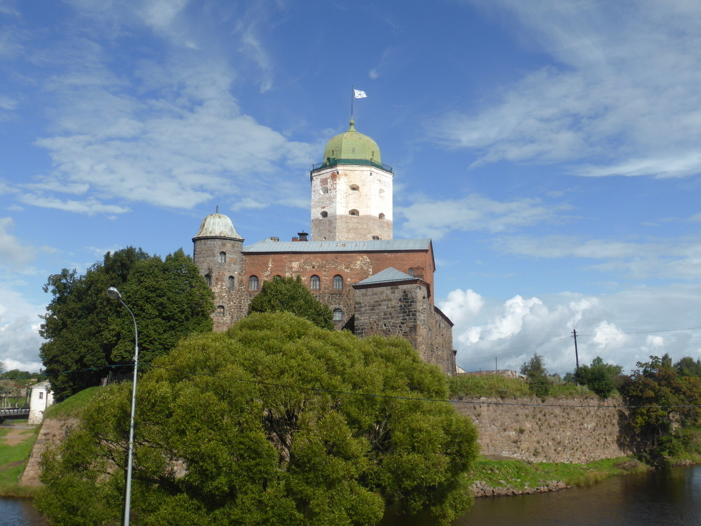
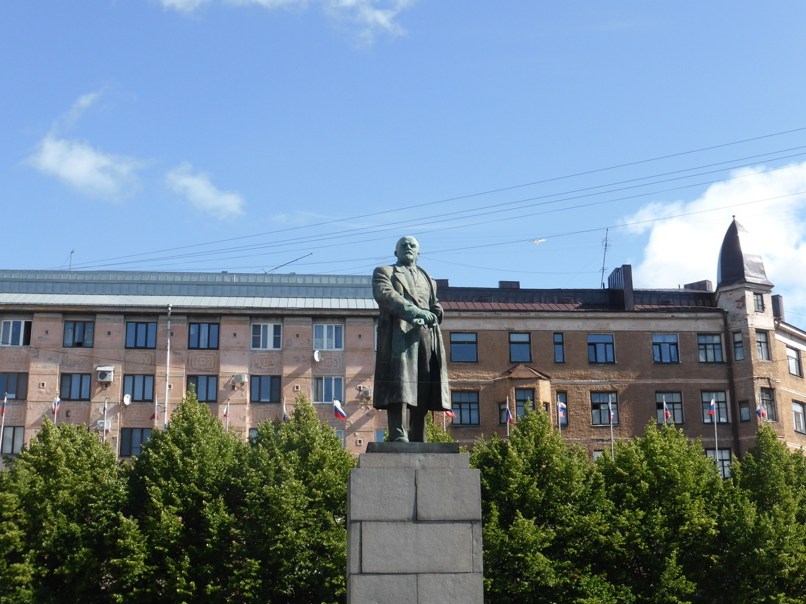
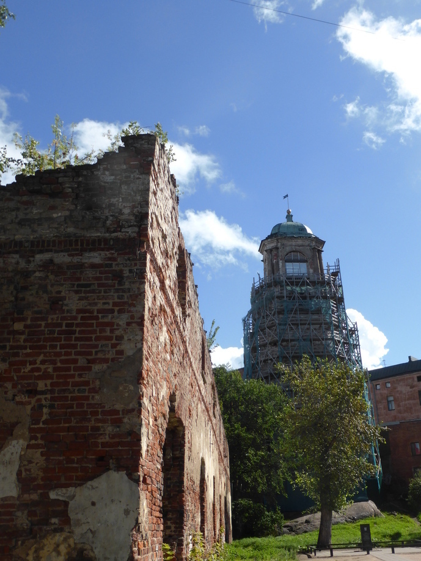
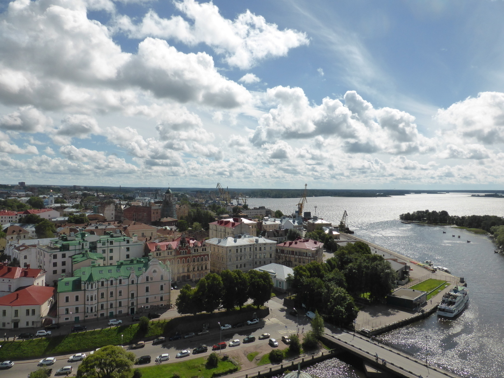

Vyborg
Tag 67
Ruhetag
An meinem Ruhetag in Vyborg bin ich zunächst ein wenig durch die Stadt gelaufen auf der Suche nach einer Karte. Mein schönes Garmin hatte nämlich keine ordentlichen Karten für Russland.    In einem kleinen Schreibwarenladen fand ich schließlich eine passende Karte. 
Nach einer kurzen Mittagspause im Hostel ging es dann auf den Olafsturm der Festung. Von dort hat man eine wunderbare Aussicht.  Nach dem Besuch der Festung habe ich mich im Supermarkt mit Proviant für die nächsten Tage versorgt. Auf dem Weg zurück habe ich im Park einen Radreisenden getroffen. Raman kam aus Priozersk und war auf einer kurzen Tour entlang der Ostseeküste.
Nach einer weiteren Pause im Hostel bin ich nochmal los um etwas zu Essen und anschließend einen kleinen Abendspaziergang zu unternehmen.